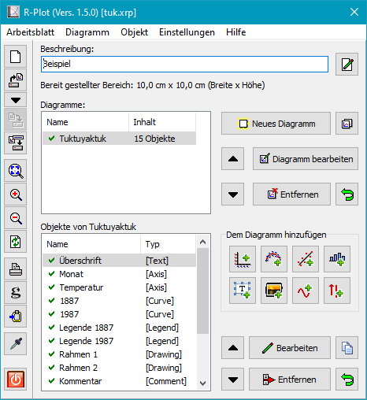

|
R-Plot Version 2.0 |
| © 2012 – 2020, Dr. J. Rathlev, D-24222 Schwentinental
|
Übersicht
Einführung
R-Plot ist ein Windows-Programm zur grafischen Darstellung von Messdaten. Es können
X-Y-Diagramme, Balkendiagramme und Histogramme angezeigt werden. Zusätzlich
gibt es die Möglichkeit, Fehlerbalken, Ausgleichskurven, durch eine Formel
beschriebene Funktionen, Bilder, Texte und einfache grafische Objekte einzubinden.
Die Anzahl von Diagrammen pro Arbeitsblatt und die Anzahl von Objekten pro
Diagramm ist theoretisch nicht beschränkt.
Auf dem Desktop werden zwei Fenster angezeigt (siehe rechts). In dem ersten
wird die aktuelle Grafik angezeigt, das zweite dient zum Bearbeiten der
Darstellung. Das Arbeitsblatt kann auf jedem Windows-Drucker ausgegeben,
über die Zwischenablage in andere Anwendungen eingefügt und für die Verwendung
in LaTeX als Encapsulated Postscript (EPS) exportiert werden.
Folgende Objekte stehen zur Verfügung:
- X- und Y-Achsen
- Position: Links oder rechts, bzw. oben oder unten oder an beliebiger
anderer Position
- Beschriftung: Größe und Schriftart einstellbar
- Skalenstriche: Länge, Breite und Farbe einstellbar
- Skalierung: Linear, logarithmisch und invers
- Rasterlinien: Optional für X und/oder Y
- Datenkurven
- Achsen: Auswählbar
- Messpunkte: 12 auswählbare Symbole, Größe und Farbe einstellbar
- Verbindungen: Gerade Linien oder Spline, Linienbreite
und Farbe einstellbar
- Fehlerbalken: Getrennt für X und Y auswählbar, symmetrische und
asymmetrische Fehlerangaben möglich, Linienbreite und Farbe einstellbar
- Daten: Entweder per Handeingabe oder Import im CSV-Format

- Ausgleichskurven
- Achsen: Auswählbar
- Datenkurve: Auswählbar
- Näherungsfunktionen: Gerade und Polynom
- Skalierung: Linear, logarithmisch und invers
- Linien: Breite, Farbe und Stil einstellbar
- Bereich: Wie Achse oder eingeschränkt
- Funktionen
- Achsen: Auswählbar
- Bereich: Wie Achse oder eingeschränkt
- Linien: Breite, Farbe und Stil einstellbar
- Balkendiagramme
- Achsen: Auswählbar
- Gestaltung: Balkenbreite und -versatz, Linienstärke,
-farbe und Füllfarbe einstellbar
- Histogramme
- Achsen: Auswählbar
- Anzahl der Streifen: Auswählbar
- Gestaltung: Linienstärke, -farbe und Füllfarbe einstellbar
- Textboxen
- Text: Beliebiger mehrzeiliger Text mit Sonderzeichen und einfachen
Formatierungen (fett, kursiv, hoch- und tiefgestellt)
- Schrift: Schriftart, Stil, Größe und Farbe einstellbar
- Hintergrund: Transparent oder auswählbare Farbe
- Umrandung: Optional
- Position: Einstellbar über die Koordinaten oder frei
positionierbar mit der Maus
- Kommentare
- Text: Beliebiger einzeiliger Text mit Sonderzeichen und einfachen
Formatierungen
- Drehung: Um jeden Winkel zwischen 0 und 360°, Drehpunkt einstellbar
relativ zum Text
- Position: Einstellbar über die Koordinaten oder frei
positionierbar mit der Maus
- Legenden
- Zuordnung: Datenkurve, Ausgleichskurve oder Funktion
- Hintergrund: Transparent oder auswählbare Farbe
- Umrandung: Optional
- Position: Einstellbar über die Koordinaten oder frei
positionierbar mit der Maus
- Ergebnisse von Ausgleichsrechnungen
- Zuordnung: Ausgleichskurve
- Hintergrund: Transparent oder auswählbare Farbe
- Umrandung: Optional
- Inhalt: Beschreibung, Polynomkoeffizienten und Standardabweichung
- Position: Einstellbar über die Koordinaten oder frei
positionierbar mit der Maus
- Bilder
- Format: gif, png, jpg, jpeg, bmp, tif, tiff, emf und wmf
- Größe: Einstellbar
- Umrandung: Optional
- Position: Einstellbar über die Koordinaten oder frei
positionierbar mit der Maus
- Linien
- Darstellung: Breite, Farbe und Stil einstellbar
- Pfeilenden: Am Anfang und/oder am Ende, Größe einstellbar
- Position und Länge: Einstellbar über die Koordinaten oder frei
positionierbar mit der Maus
- Rechtecke
- Rand: Breite, Farbe und Stil einstellbar
- Füllung: Transparent oder auswählbare Farbe
- Position und Größe: Einstellbar über die Koordinaten oder frei
positionierbar mit der Maus
- Voreinstellungen
- Einheiten: cm oder Inch
- Arbeitsblatt: Größe/Format, Ränder
- Diagramme: Farbe/Transparenz, Randbereiche
- Achsen: Beschriftung, Rahmen
- Linien und Symbole: Breite, Größe, Farbe
- Text: Schriftart, Schriftstil
R-Plot wird als ausführbares Windows-Setup bereitgestellt. Es kann in ein
beliebiges Verzeichnis installiert werden.
Die Deinstallation erfolgt über die Windows-Systemsteuerung.
Starten
Nach der Installation findet man eine Verknüpfung auf dem Desktop (optional)
und einen Eintrag im Startmenü von Windows.
- Dr. Jürgen Rathlev
- D-24222 Schwentinental
- E-Mail: kontakt(a)rathlev-home.de
- Das Programm wurde mit Embarcadero Delphi 10 Seattle
erstellt.
- Der Editor basiert auf dem OpenSource-Projekt SynEdit
- https://github.com/SynEdit/SynEdit
- Für die Auswertung von mathematischen Ausdrücken wird eine vom Autor an Delphi
angepasste Version der Parser Toolbox 2.1 von
J. Dankert verwendet
- Die Mehrsprachenunterstützung benutzt GnuGetText for Delphi von Lars B. Dybdahl
- © 2005, Lars B. Dybdahl and others -
http://dybdahl.dk/dxgettext/
- Für die Installation des Programms wird Inno Setup von Jordan Russell verwendet
- © 1997-2019 Jordan Russell -
http://www.jrsoftware.org/isinfo.php
- 1. Nutzung des Programms
- Das vorliegende Programm kann kostenlos für private Zwecke und
in der Forschung und Lehre genutzt werden. Eine Gewährleistung
für die Funktionsfähigkeit des Programms und der Korrektheit der Ergebnisse,
sowie eine Haftung für Schäden an der Hard- oder Software des Benutzers
wird nicht übernommen.
- 2. Weitergabe des Programms
- Das Programm darf ohne Einschränkungen weitergegeben werden, vorausgesetzt die
Originaldateien, wie sie vom Autor bereitgestellt wurden, bleiben unverändert.
Es darf dafür keine Gebühr verlangt werden.
Die Nutzung oder Verwertung als Bestandteil von kommerziellen Produkten ist
untersagt.
Dr. J. Rathlev, D-24222 Schwentinental, April 2020